Atelier bois à La Chapelle-Saint-Jean, en Périgord Noir
Bois, métal,céramique ?
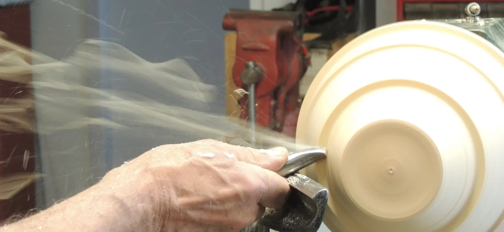
Tourneur sur bois depuis plus de 26 ans, je travaille la surface de la matière pour lui donner un aspect contemporain et provoquer la surprise. Le doute devient une invitation à redécouvrir la matière.
- Depuis 1999Tourneur sur bois, formé auprès de maîtres français et internationaux
- Artisan d'ArtTitre attribué par la CMA Nouvelle-Aquitaine Dordogne en 2025
- Top 3Métiers d'Art, Trajectoires d'exception 2025 en Dordogne
- Prix du publicSalon des métiers d'art NAMMA, Terrasson-Lavilledieu
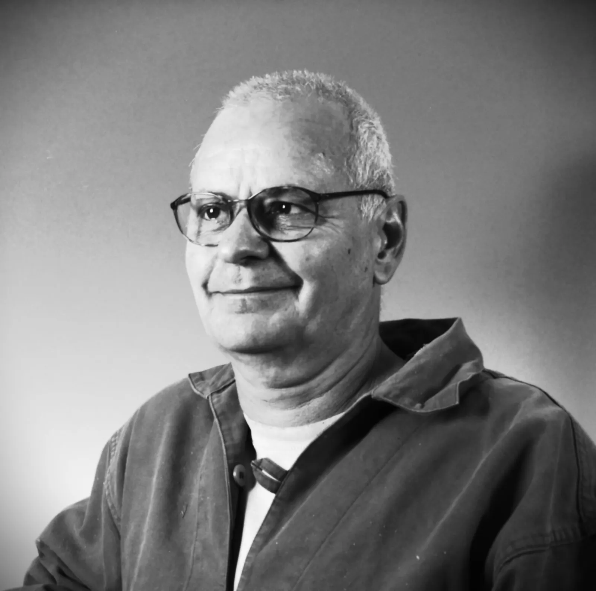
Membre du Pôle Expérimental des Métiers d'Art de Nontron et du Carnet de route des métiers d'art de Dordogne.
Je recherche des lignes épurées, une élégance organique inspirée du vivant.
Mon travail s'inspire des formes, couleurs, textures et matières offertes par la nature. Glanés au fil du temps, ces éléments nourrissent mon imaginaire et réapparaissent parfois de manière inattendue, au détour d'un croquis griffonné au cœur de la nuit.
Le travail de la surface du bois occupe une place essentielle. Mon objectif : troubler les repères, éveiller la curiosité.
Le tournage, la sculpture, mais aussi le métal, la feuille d'or, les pigments, la peinture, l'ardoise : autant de matières qui enrichissent mes créations au gré des envies, des rencontres et des rêves.
J'apprécie particulièrement les projets collaboratifs, avec des émailleurs, des céramistes, des créateurs de luminaires ou des peintres.
Pierre Cornélis
De l'idée à la pièce unique
Formes tournées sur un ou plusieurs axes, surfaces texturées, gravées, patinées ou rehaussées d'or : chaque pièce suit son propre cheminement.
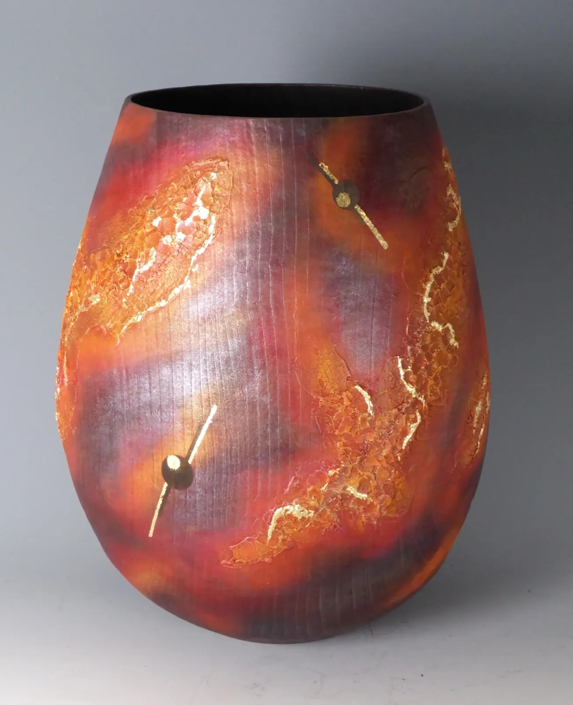
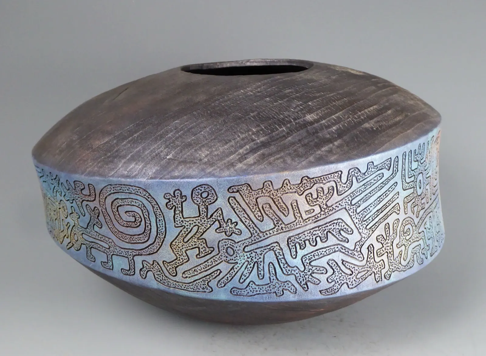
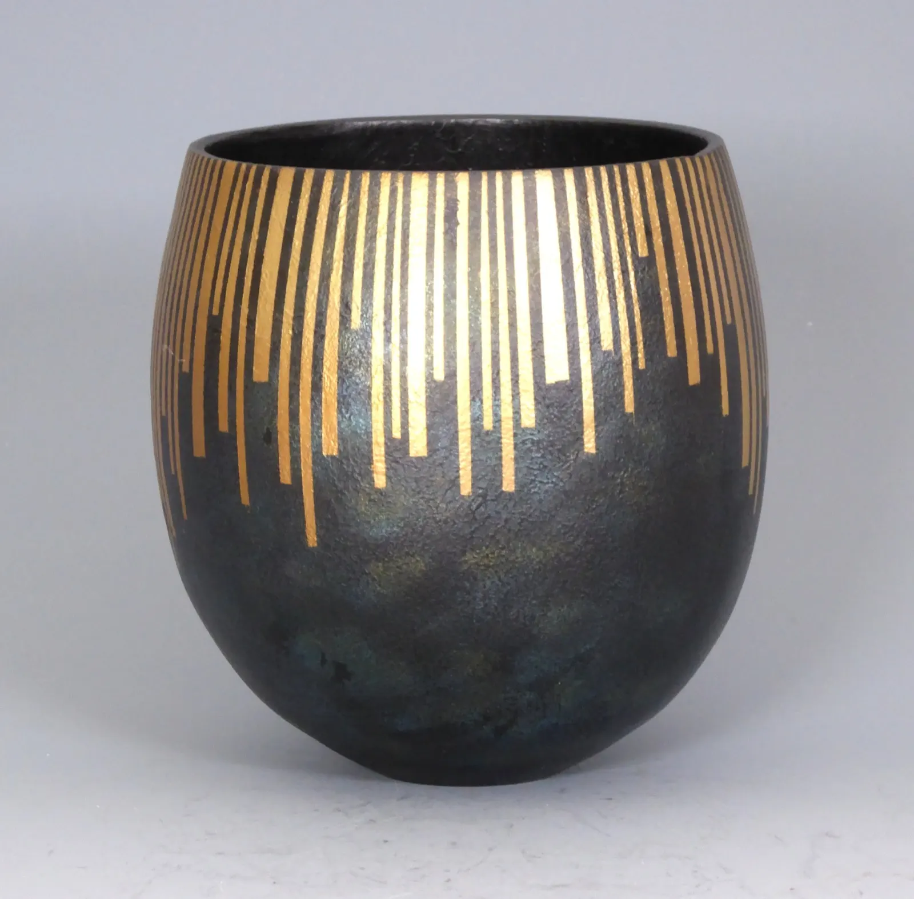
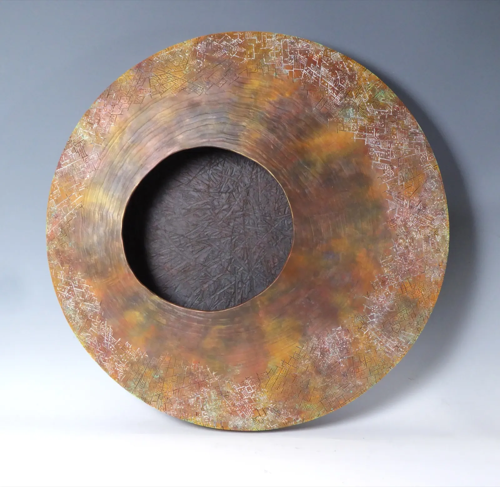
Un jeu de regards et d’illusions
Certaines pièces ressemblent à des céramiques, jusqu'à ce que les veines du bois se révèlent. D'autres sont tournées sur plusieurs axes, puis sculptées et ajourées.
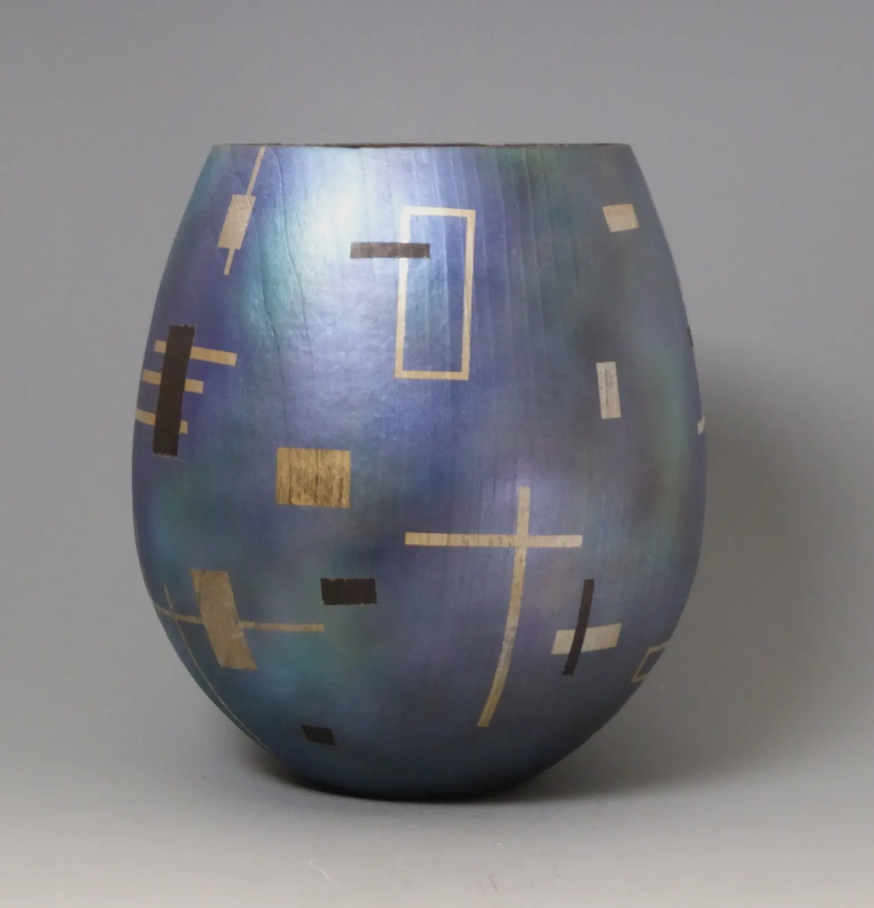
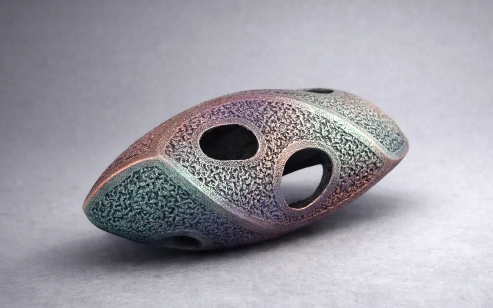
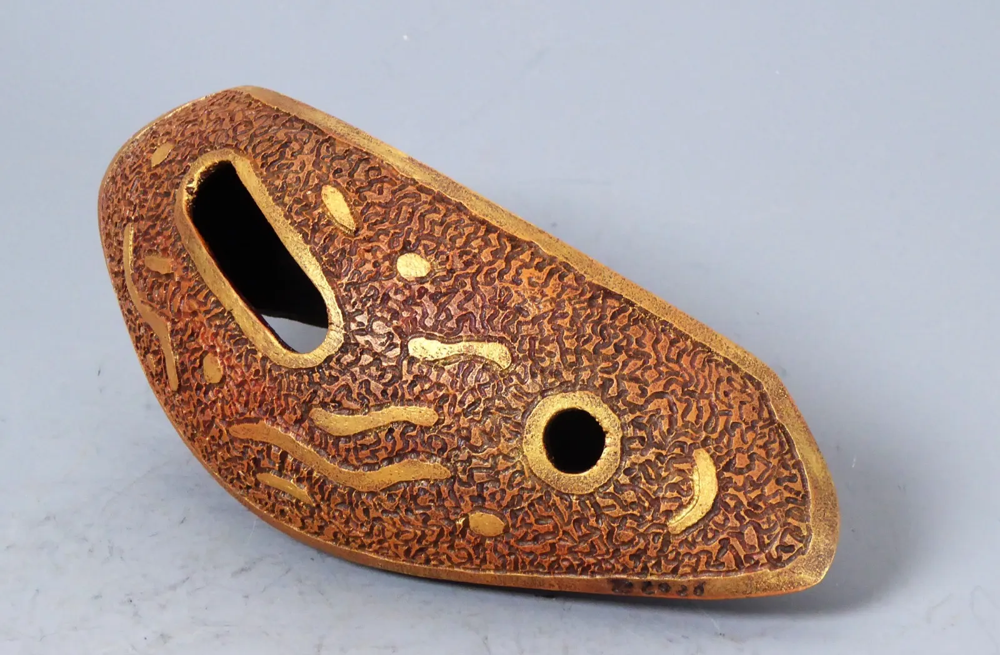
Où voir les pièces
En 2026, les pièces sont en galerie à Nontron, Brantôme et Niort. À l'atelier, dans l'attente de vous présenter un nouvel événement.
À venir
-
8 novembreDimanche, à partir de 9h30
Journée de tournage sur bois de l'AFTAB
Antenne Périgord-Limousin, à l'atelier de La Chapelle-Saint-Jean. Venir avec ses dernières réalisations et de quoi manger à midi, pour un repas partagé sur place.
-
2027Paris
Révélations, Grand Palais
Biennale internationale des métiers d'art et de la création.
En galerie
- Boutique Métiers d'Art de Nontron5 rue Carnot, 24300 Nontron. Du mardi au samedi, 10h à 13h et 14h à 18h. 05 53 60 50 77
- Tekhnè, le Comptoir des Arts26 boulevard Coligny, 24310 Brantôme-en-Périgord
- 36 Quai des Arts79000 Niort
- Galerie de Rouffignac275 route de Reilhac, 24580 Rouffignac-Saint-Cernin-de-Reilhac
Expositions passées
Une sélection, de la plus récente à la plus ancienne.
- Septembre 2026Démonstrateur au Congrès international de tournage sur bois, Espagne
- 1er trimestre 202636 Quai des Arts, Niort : trois artistes, trois matières, un jeu de regards et d'illusions
- Octobre 2025Démonstrateur au Congrès international de tournage sur bois, Irlande
- Septembre 2025Salon Déco de La Rochelle, du 26 au 29 septembre
- Août 2025Sarlat-la-Canéda, exposition à l'Hôtel Maleville, du 1er au 15 août
- 2025Périgueux, Biennale de la société des beaux-arts du Périgord
- Octobre 2022NAMMA, salon des métiers d'art de Terrasson-Lavilledieu : Prix du public
- Exposition itinérante« Du cœur à l'écorce », de l'AFTAB, sélectionné à deux reprises
- Grand Atelier d'AiguinesL'Art et la Matière, en 2015, 2017 et 2021
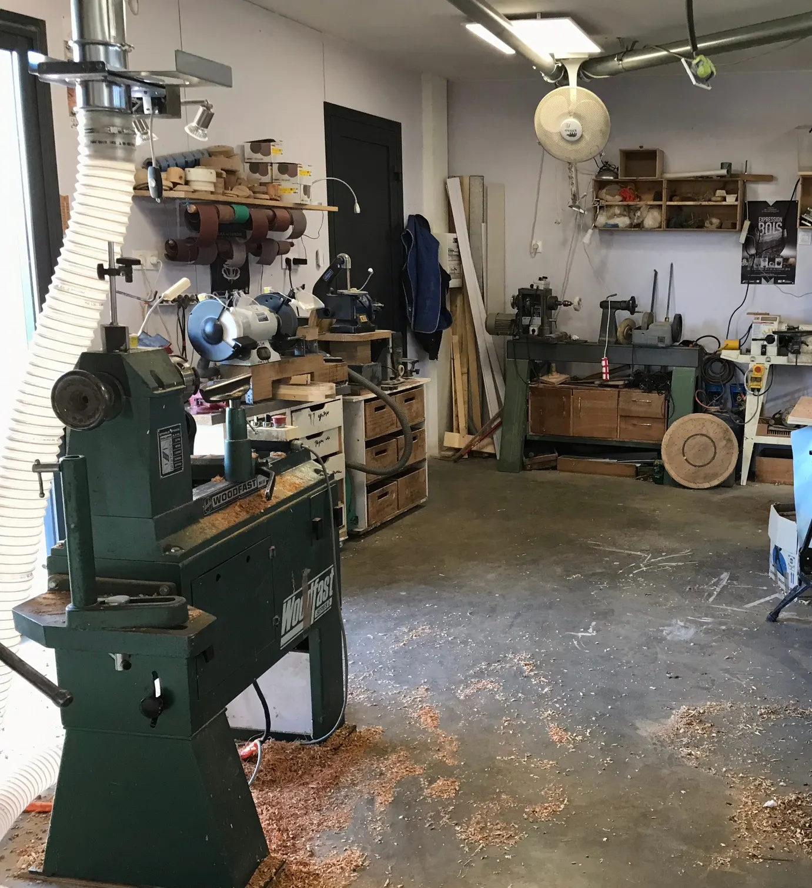
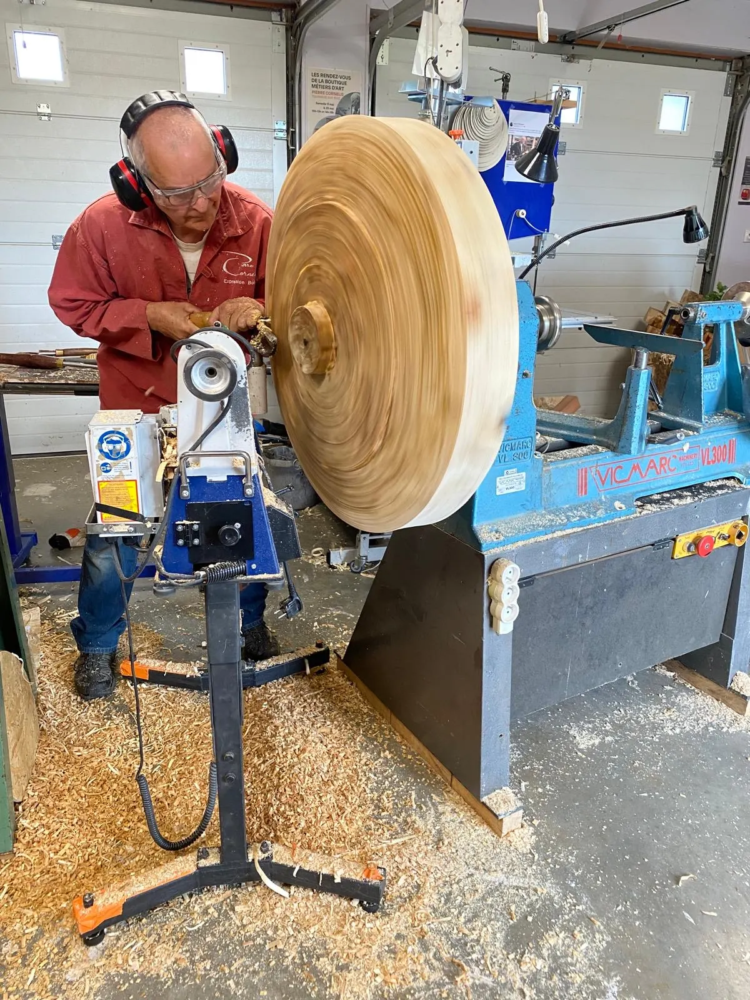
Le peuplier est délicat
J'accueille à la journée, du débutant au professionnel
Formation individuelle, journées d'atelier partagé, réunions de tourneurs : chaque journée est adaptée à la personne, dans mon atelier de La Chapelle-Saint-Jean.
- Découverte plaisirUne journée pour voir se dérouler le bois et apparaître un objet que l'on rapporte chez soi.
- InitiationEn vue d'une pratique régulière : les bases pour travailler correctement et en sécurité, avant d'acheter un tour.
- Tournage spécifiqueVous tournez déjà et souhaitez explorer une technique ou le maniement d'un outil.
- Techniques additionnellesLa texture petite ou grosse, la mise en couleur, l'ajout de matière.
Il n'y a pas d'agenda de formation défini : écrivez-moi pour toute information.
Venir à l'atelier
« C'est à creuser ? Atelier bois », en Dordogne, dans le Périgord Noir. J'y accueille régulièrement des journées de formation, des journées d'atelier partagé et des réunions de tourneurs.
- Atelier
- 24390 La Chapelle-Saint-Jean, France
- lapoulepicor@gmail.com
- Formulaire
- pierrecornelis.com/contact
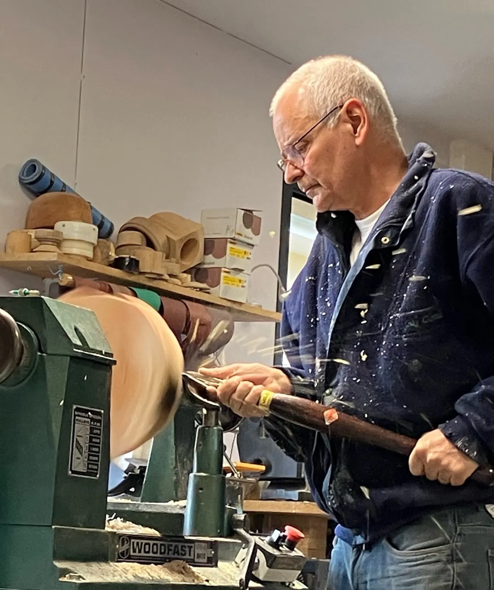